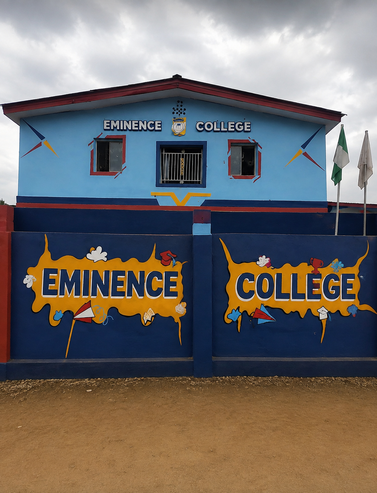

Eminece college ota was found in year 2017, the institution cater to student from early childhood stages up to the secondary school level.
The school operates on the principle that every child can achieve their personal best through a secure, purposeful, and nurturing environment.
To provide a conducive learning environment that instills quality judgment,self-reliance, integrity,and self-disciple
The school strongly empasizes science,technology, and critical thinking. Notably, Eminence College emerged as the ultimate winner in the senior secondary category of the 2024 Nigerian STEM Championship, with a student securing the first-position grand prize.
The school also won first place in the regional mathema 1.0 math contest organized by the ulimate survival. maintain a strict zero-tolerance policy for bulling,cheating and gross misconduct while balancing academics with moral upbringing.
| school name | course | class | year |
|---|---|---|---|
|
Eminence college prominence ideal model school |
Science Art Commercial |
kindergarten/sss 3 | 2017/ 2026 |